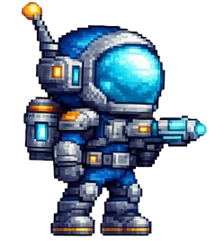
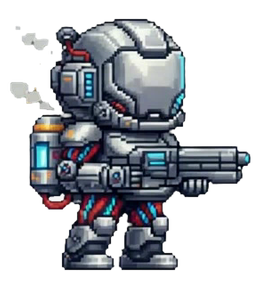
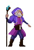
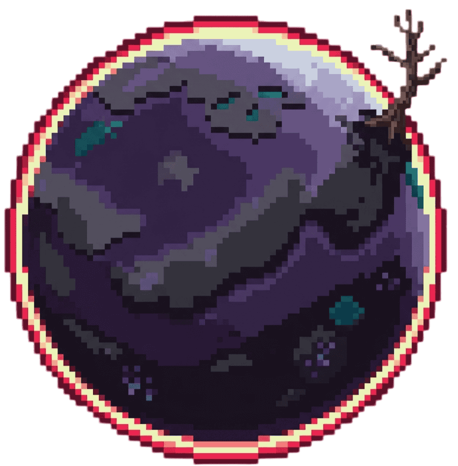

Archivos Clasificados: Sistema Estelar
Base de datos interplanetaria de la misión de exploración.
Bienvenido a los registros detallados del cosmos. Este compendio contiene análisis biológicos, descripciones de comportamiento, especificaciones de personal y datos geográficos recopilados. Utiliza la terminal de búsqueda para filtrar la información crítica de inmediato.
Registro de Tripulación y Aliados
Sujeto: Tracker (El Turista Accidental)

Un terrícola común que terminó en el lugar equivocado (o correcto) en el momento justo. Sin entrenamiento previo pero con una curiosidad inagotable, Tracker recorre el cosmos armado solo con su ingenio y la tecnología de una nave que aún no termina de entender. Es una unidad ágil diseñada para la evasión extrema y el análisis de patrones de ataque en milisegundos.
Sujeto: Vector (El Tanque Andante)

No te dejes engañar por su apariencia humana; Vector es la cima de la ingeniería biotecnológica de Gaya. Actúa como un tanque imparable, capaz de absorber castigo masivo mientras devuelve golpes devastadores. Es frío, eficiente y posee una tecnología tan avanzada que hace que las herramientas de la Tierra parezcan juguetes de madera.
Sujeto: Aprendiz (El Pequeño Mago)

Para él, las leyes de la física son simples sugerencias. Este joven mago canaliza energías que desafían toda lógica humana, eliminando amenazas sin disparar una sola bala. Eso sí: es un cañón de cristal. Su poder ofensivo es absoluto, pero su resistencia física es casi nula; si parpadeas, podrías perderlo.
Bestiario y Amenazas Ecológicas
Amenaza: Korax, el Tanque Andante
Una especie con forma de escarabajo, pero en una versión colosal adaptada a los entornos más hostiles de Gaya. Su cuerpo está recubierto por un caparazón oscuro y endurecido, tan resistente que puede recibir múltiples impactos sin mostrar señales de daño alguno. Sin embargo, esto no significa que sea invencible… toda criatura tiene su forma de perecer.
Korax no es particularmente veloz, pero compensa esta limitación con una presencia imponente y una agresividad territorial absoluta. Su cuerno curvado funciona como un ariete natural, capaz de embestir con fuerza suficiente para destrozar formaciones rocosas y eliminar amenazas de un solo golpe.

Suele habitar zonas pantanosas o llanuras contaminadas, donde el suelo blando no representa ningún obstáculo para su avance constante. De hecho, su peso y resistencia lo convierten en una fuerza imparable cuando decide moverse. Es una de las primeras criaturas a las que se enfrenta el Tracker, convirtiéndose en una prueba temprana de supervivencia. No es el más rápido, ni el más letal… pero sí uno de los más difíciles de derribar sin comprender sus debilidades. En Gaya, enfrentarlo sin preparación no es valentía… es un error.
Kobolds, Errantes Astutos

Pequeñas criaturas reptilianas de postura erguida, los Kobolds destacan no por su fuerza, sino por su inteligencia y adaptabilidad. De complexión ágil y movimientos rápidos, utilizan herramientas y armas improvisadas, siendo la espada corta su elección más común.
Son seres sociales que rara vez se encuentran solos. Prefieren moverse en grupos, donde cada individuo cumple un rol: exploradores, recolectores, guardianes o artesanos. Esta organización les permite sobrevivir incluso en los entornos más hostiles de Gaya. A diferencia de otras criaturas del planeta, los Kobolds no dependen únicamente del instinto. Observan, aprenden y se adaptan.
Son capaces de reconocer patrones, avoid depredadores mayores y aprovechar recursos que otras especies ignoran. Se les puede ver recolectando cristales, encendiendo hogueras o patrullando su territorio con armas en mano. Aunque no son intrínsecamente agresivos, reaccionan con rapidez ante cualquier threat, atacando en grupo con coordinación sorprendente. Su presencia no se limita a Gaya. Existen registros de Kobolds en otros planetas, lo que sugiere una capacidad de migración o expansión aún no comprendida. Encontrarse con uno puede no parecer peligroso… Encontrarse con varios, rara vez termina bien.
Cartografía Estelar: Planetas Encontrados
Planeta: Gaya

Un reflejo salvaje de la Tierra donde la evolución tomó el camino de la guerra. Hogar del temible Korax, un tanque biológico andante, y del escurridizo Jabalí de Espino, cuyo veneno no conoce cura. ¿Podrás sobrevivir a la fauna que reclama este mundo?
Planeta: Rivalta
Un mundo de fuego eterno y ríos de lava que desafían a la vida. Entre las llamas acechan los Ents Volcánicos, criaturas arbóreas de una velocidad aterradora. Todo está bajo la mirada de El Guardián. ¿Tienes el valor para desafiar al protector del núcleo?
Planeta: Umbryth

No dejes que su belleza vegetal te engañe: aquí, cada hoja es una cuchilla y cada flor un arma venenosa. Mientras las plantas cazan en silencio, se dice que El Olvidado vaga por las sombras del bosque eterno. ¿Serás tú quien logre encontrarlo... o su próxima presa?
Planeta: Cryon

Un páramo sumido en tormentas de nieve y temperaturas bajo cero. Entre el hielo milenario aguardan criaturas de poder desconocido y rastros de una tecnología antigua olvidada por el tiempo. Las fuerzas más poderosas de Cryon te esperan. ¿Superarás el frío o quedarás congelado para siempre?
Planeta: Vesper-7

Vesper-7 es una frontera ciega en los mapas estelares. No es un mundo muerto, sino un mundo que nunca ha sido escuchado. A pesar de sus cielos apagados y sus montañas de piedra oscura, el planeta palpita con una vida propio: corrientes de agua subterránea que alimentan una flora extraña y criaturas que se moverán entre las sombras de cuevas nunca antes pisadas.